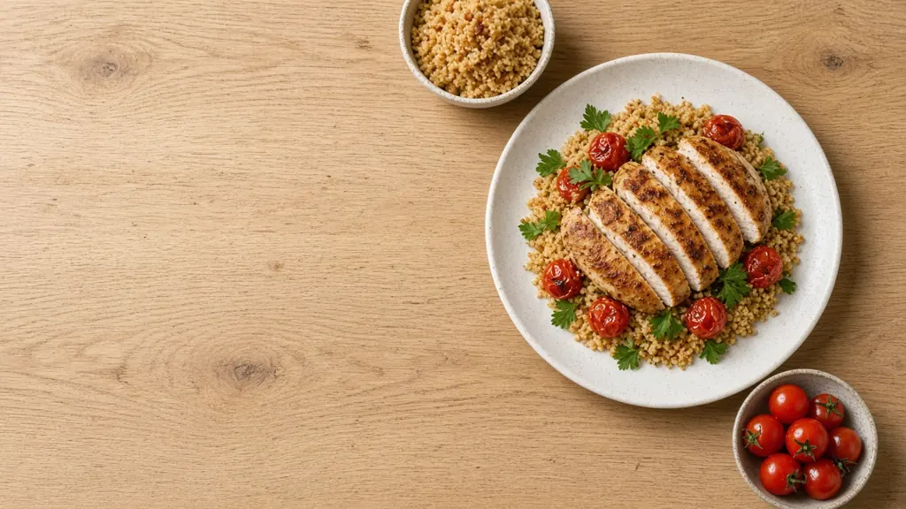
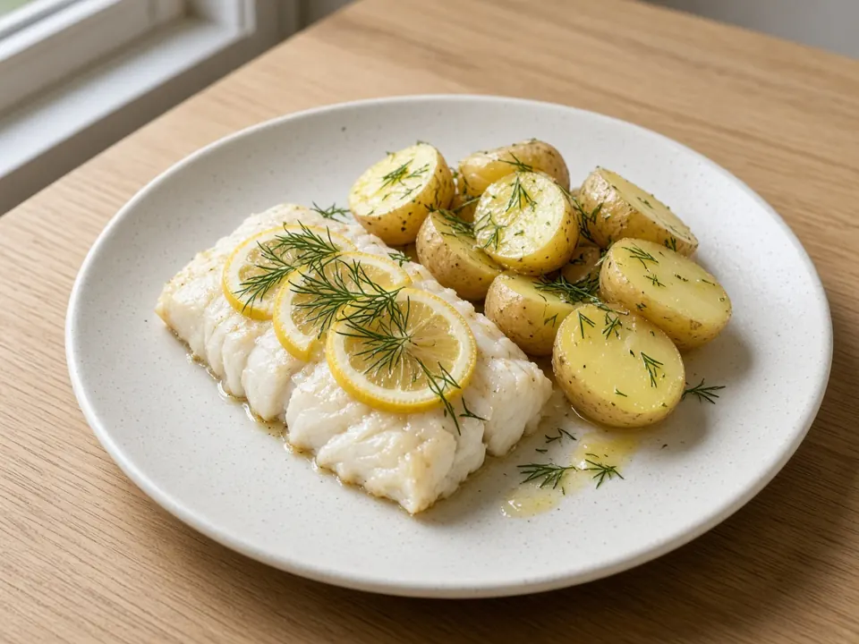

Завтрак, обед и ужин под ваш бюджет
и КБЖУ за 10 секунд
Напишите, сколько хотите потратить и чего не едите. Мы подберём проверенный рецепт из реальных товаров магазина, посчитаем цену и калории и подстроим готовку под вашу технику.
- В рамках бюджета
- Без продуктов из стоп-листа
- Калории в коридоре ±10%
Уже собраны из товаров на полке
Подборка на сегодня. Цель — 700 ккал на порцию, допуск ±10%. Цены по каталогу на 21 октября 2026. Порции подогнаны оптимизатором под цель, поэтому калории близки к 700.
Б — белки · Ж — жиры · У — углеводы, граммы на порцию
Три шага до блюда
Скажите как есть
Текстом или голосом, как другу: бюджет, продукты, ограничения.
Считаем точно
Оптимизатор перебирает рецепты и товары: целые упаковки, цена на кассе, белок не ниже цели.
Готовите спокойно
Список покупок, шаги под вашу технику и режим готовки, в котором экран не гаснет.

Готовим тем, что у вас есть
Один раз отметьте технику — и рецепты подстроятся: есть духовка — рыба запечётся в форме, нет — в аэрогриле; гуляш можно потушить в мультиварке.
Завтрак, обед или ужин в одном сообщении
@Top_FoodBot понимает текст и голосовые, по фото кухни определяет технику, помнит холодильник и напоминает про ужин в 17:30. Аккаунт общий с сайтом.
- Кнопки «Сытнее», «Легче», «Дешевле»
- Список покупок и холодильник
- Привязка к сайту по коду